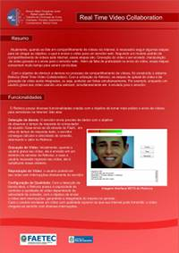

Trecho do artigo:
Abstract: Currently, when we talk about sharing videos over the Internet, you must follow certain steps to reach the goal, which is send a video to a web server. Following a standard video-sharing over the Internet, these steps are: Recording video to be sent, manipulation of the recorded video and send it to the web server. Besides the lack of practicality in sending the video, these steps consume some time to be completed.
Aiming to reduce the delay in the process sharing of videos, we built the system retivico (Real Time Video Collaboration). With the use of retivico, the steps to upload video and video recording will be integrated, or may be made simultaneously. For example, while a user record your video using a webcam, while it is sent to the server.
Resumo: Atualmente, quando se fala em compartilhamento de vídeos via internet, é necessário seguir algumas etapas para se chegar ao objetivo, o qual é enviar o vídeo para um servidor web. Seguindo um modelo padrão de compartilhamento de vídeos pela internet, essas etapas são: Gravação do vídeo a ser enviado, manipulação do vídeo gravado e o envio para o servidor web . Além da falta de praticidade no envio do vídeo, essas etapas consomem muito tempo para serem concluídas.
Com o objetivo de diminuir a demora no processo de compartilhamento de vídeos, foi construído o sistema Retivico (Real Time Vídeo Collaboration). Com a utilização do Retivico, as etapas de upload de vídeo e de gravação de vídeo serão integradas, ou seja, poderão ser feitas simultaneamente. Por exemplo, enquanto um usuário grava seu vídeo usando uma webcam, simultaneamente ele é enviado para o servidor.